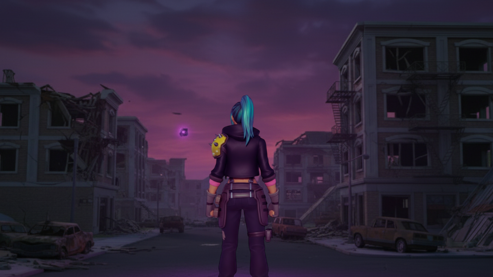
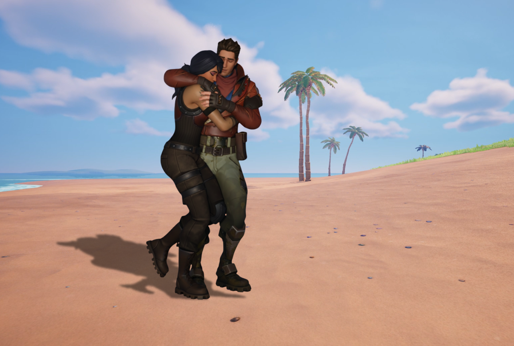
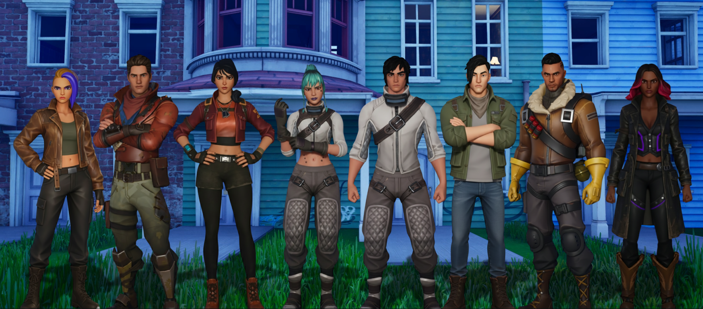
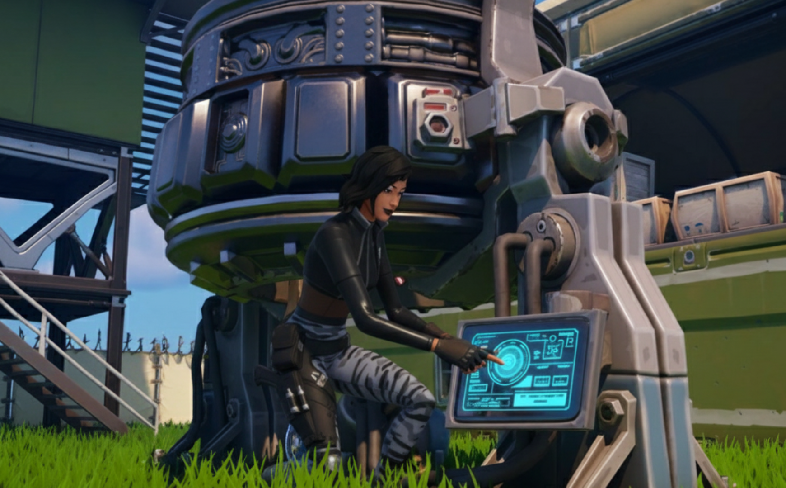
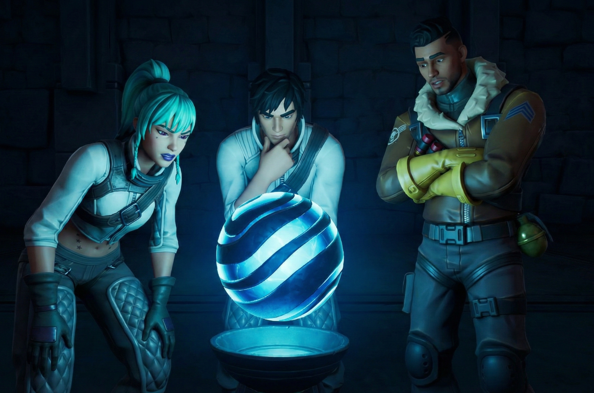
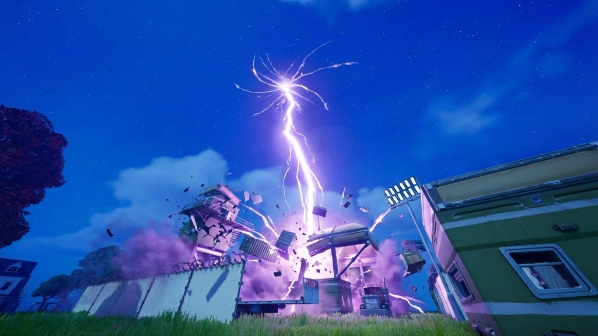
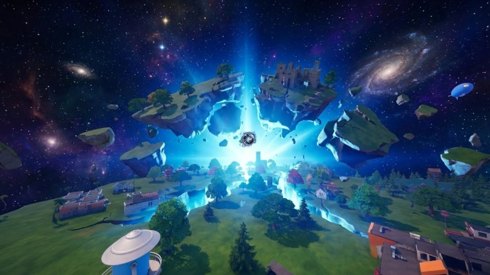
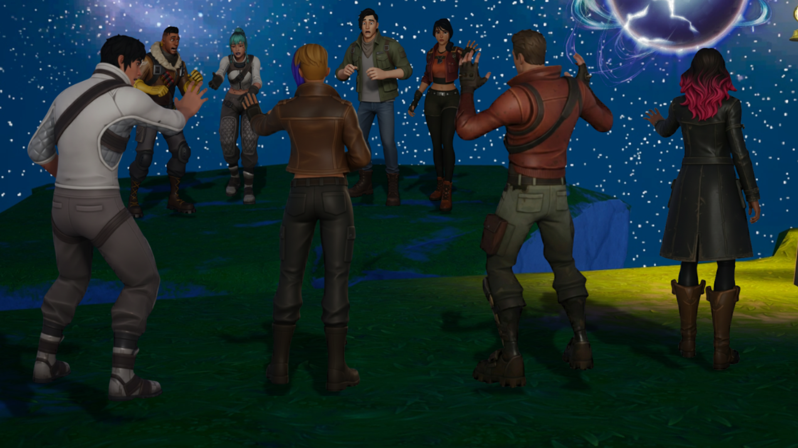

Astéria
// Archives Classifiées - Tome 2

La Chute des Mondes
Les réalités s'effondrent. À Fontainewood, les frères Damian et Léo survivent de justesse à l'attaque extraterrestre de l'Ultime Réalité. En parallèle, à Havrèque, l'Exécutrice Cubique ravage la ville. Dans un acte d'héroïsme ultime, Hiro brise un cristal expérimental de matière négative, créant une faille dimensionnelle pour sauver Scarlet, Barret et Loper au prix de sa propre vie.

L'Éveil sur Astéria
Recrachés par les failles, les survivants s'échouent sur un nouveau monde verdoyant et mystérieux : Astéria. Perdue et traumatisée, Loper croise la route de Damian et Léo. Touchés par sa détresse, les deux acteurs de la Côte Dorée décident de veiller sur elle, marquant le début d'un lien profond entre Damian et la jeune technicienne.

Le Nouveau Clan du Soleil
Le destin guide les exilés vers le Hameau de l'Enclume. C'est là que Loper tombe nez à nez avec Scarlet et Barret, donnant lieu à des retrouvailles bouleversantes. Soudés par leurs pertes respectives, Damian et Léo intègrent officiellement le Clan du Soleil. Raptor et Harper les aident à consolider leur nouveau refuge.

L'Ombre de la Faction
Au centre de l'île, de sombres opérations débutent. L'agente Sorana et son homme de main Fusion, membres de la Faction Chaos sous les ordres de Géno et de l'Institut, érigent une base fortifiée. Leur objectif est d'activer des onduleurs pour s'emparer de l'énergie du Point Zéro, toujours enfoui sous la surface.

Le Secret du Temple
Ignorant les manipulations de l'Institut, le Clan du Soleil explore un temple ancien de l'île. En interagissant avec une étrange sphère reliée au Point Zéro, ils dérèglent involontairement le dispositif de la Faction Chaos au centre de l'île, modifiant les coordonnées de leur faille...

La Faille vers le Néant
Le dispositif de Sorana s'emballe. La faille devient violette et libère l'Exécutrice Cubique. L'entité pulvérise la base et calcine Sorana et Fusion avec sa foudre noire. De retour au Hameau, la panique s'empare de Loper et Scarlet face à ce démon. Déterminé à en finir, Léo offre un plastron à Scarlet, et le Clan se prépare à contre-attaquer.

La Chute d'Astéria
La sorcière érige une tour cubique pour siphonner le Point Zéro. L'énergie instable fissure le sol et Astéria commence à se disloquer en morceaux flottants. Le Clan atteint le temple et tombe sur Le Scientifique, l'un des Sept, affairé à lancer l'ultime protocole "Bulle de Réalité" pour sécuriser l'orbe.

Séparation dans le Vide
Le Point Zéro libère une onde de choc fulgurante qui balaye l'entité sombre. Hélas, l'île est définitivement détruite. Projetés dans le vide spatial sur des fragments de roche différents, les membres du groupe sont déchirés. Damian s'éloigne impitoyablement dans l'immensité du cosmos, arraché à Léo et à Loper qui assistent impuissants à la séparation.